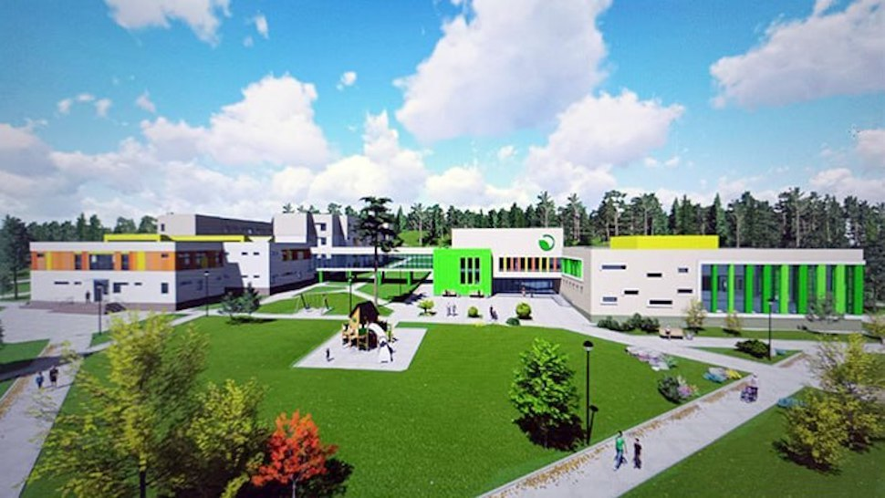

Центр реабилитации абилитации

Государственное учреждение «Центр социальной реабилитации,
абилитации детей-инвалидов и инвалидов РОСТОК» (далее - Центр «РОСТОК»)
является государственным учреждением социального обслуживания,
деятельность которого направлена на организацию и оказание социальных
услуг в области социальной реабилитации, абилитации гражданам,
находящимся в трудной жизненной ситуации их числа инвалидов, в том
числе детей-инвалидов в возрасте от 7 до 18 лет.
Центр «РОСТОК» создан 14 июня 2024 года, рассчитан на одновременное
пребывание 120 инвалидов и 30 сопровождающих. Продолжительность курса
социальной реабилитации, абилитации составляет до 1 месяца с периодичностью
не более одного раза в год. В учреждении созданы условия для комплексной
социальной реабилитации инвалидов. Имеется современная
материально-техническая база для проведения социальной и медицинской
реабилитации. Созданы современные условия для отдыха и досуга - игровые
и компьютерные комнаты, парковые, физкультурные зоны, зона для проведения
культурно-массовых мероприятий. Для комфортного пребывания инвалидов
оборудованы одноместные и двухместные спальные номера с санитарными комнатами
с учетом требований доступной среды.
Ссылка на сайт
Как сюда добраться